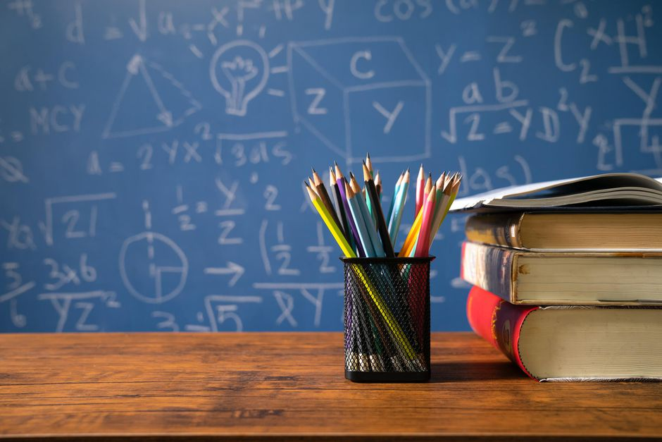

V K PUBLIC SCHOOL

ABOUT US
Teaching students how to learn is just as important as teaching them what to learn. We encourage our students to think for themselves, ask questions and pursue their interests through independent reading and research.
The curriculum is regularly updated to stimulate students’ interests and gain the knowledge they need to compete in the fast-changing 21st century global world. Teachers strive to make the classes as interactive as possible and use different methods to get the best out of each student. Collaborative learning is incorporated into lessons so students can share ideas and learn with and from each other.
Students are engaged in experiential learning through a variety of resources. Visual Arts, Music, Drama and Physical Education are additional curricular offerings to all students. There are also many enrichment activities including outbound trips and exchanges with other schools.
Board and Curriculum
Early Years
Montessori and Kindergarten are offered at the early childhood level.
Montessori
Children begin Montessori when they are three years old and continue for three years until they join Class 1. Montessori is a method of education founded in 1907 by Dr. Maria Montessori that is based on self-directed activity, hands-on learning and collaboration.
Each Montessori environment follows the principle of mixed age-groups which promotes a strong sense of community through peer learning and interaction. The “specially prepared environments” allows children to move freely and choose from a variety of developmentally appropriate activities under the guidance of trained adults.
Kindergarten
Children join Kindergarten at four years of age and continue for two years until Class 1. It promotes holistic development essential for continuous success in school life in student-centred settings. Children have an opportunity to participate in activities which weave arts, crafts, stories and play together to explore a range of concepts in language, mathematics and sciences. Kindergarten recognises the social nature of learning and children are encouraged to work not only in small groups but as a whole class as well. Each Kindergarten class is supported by two teachers thereby improving the student teacher ratio.
Primary Years
NPS offers an integrated, interdisciplinary curriculum for Primary school. Our academically rigorous curriculum is integrated with creative arts and presented imaginatively to engage the students physically, cognitively and emotionally.
It is our constant endeavour to facilitate and provide a productive learning process through activity-oriented lessons, hands-on work and extensive co-curricular activities.
As students move through the Primary School, we begin to introduce them progressively to the world of integrated knowledge, while particularly strengthening their aptitude in the core studies of English, Mathematics, General Science and Social Science.
Middle Years
Middle School students study a curriculum that is broad based with emphasis on the core subjects.
Middle School students are ready to tackle deeper and more discreet subjects with an array of specialist teachers, including the challenge of additional languages. In Class 5, Sanskrit and French are introduced as a third language in addition to English, Mathematics, Computer Science, Hindi, General Science and Social Studies.
In Class 6, Mathematics is split into Math-I and Math-II, General Science becomes more detailed as Physics, Chemistry and Biology and Social Science becomes more specialized as History-Civics and Geography. English, Hindi, Sanskrit and Computer Science continue to be in the programme.
Secondary and Senior Years
During these years, students become more independent learners. Learning goes beyond books through projects, multimedia presentations, group work and collaborative learning.
Students of Classes 9 and 10 study English, Hindi or French or Sanskrit, General Science, Social Science and Math.
In Class 11, students may choose:
The Commerce stream which includes English, Business Studies, Economics, Accountancy, and Entrepreneurship or Math.
The Science stream which includes English, Physics, Chemistry, Math, and Computer Science or Biology or Economics.
The Humanities stream which includes English, History, Economics, Psychology, and Entrepreneurship.